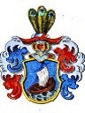

3607 Katarina Johansdotter Walstenia
* 1630 Pargas, Finland
† omkring 1675 Pälkene, Finland
Blev ca 45 år
7214 Johannes Petri Walstenius
* 1590 Finland
† 1658 Finland
Kyrkoherde i Nådendal
Blev högst 68 år
14428 Petrus Johannis Pargasensis
* 1550 Attu, Pargas, Finland
† mellan 1617 och 1620 Pargas, Finland
Kyrkoherde i Pargas
Blev högst 69 år

14429 Karin Eliasdotter Esping
* omkring 1550
† 1619 Åbo, Finland
Blev ca 69 år
28858 Elias Simoni (Simonsson)
* omkring 1530 Viipuri, Finland
† 1584 Pargas, Finland
Kyrkoherde i Pargas
Blev ca 54 år
28859 Agneta Klemetsdotter Esping
* omkring 1530 Pargas, Finland
† 1619 Åbo, Finland
Blev ca 89 år
7215 Anna Johansdotter Limingia
* 1602 Finland
† 1674 Loimaa, Finland
Blev högst 72 år
14430 Johannes Henriksson Limingius Corvinus
* 1563 Uleåborg, Norra Österbotten, Finland
† 1634 Finland
Kyrkoherde
Blev högst 71 år
28860 Henrik Laurentii Lithovius
* 1537 Littois by, Finland
† 1615 Limingo, Norra Österbotten, Finland
Kyrkoherde
Blev högst 78 år
28861 Catharina Östensdotter Sursill
† efter 1619 Liminika, Finland
14431 Kristina Östensdotter Sursill
* 1567 Teg (AC)
† 1632 Finland
Blev högst 65 år
57722 Östen Eriksson Sursill
* omkring 1533 Umeå (AC)
† 1580 Umeå (AC)
Blev ca 47 år
57723 Magdalena (Malin) Eriksdotter
* omkring 1535 Umeå (AC)
† efter 1580 Sverige